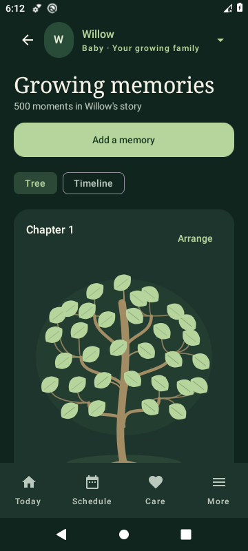
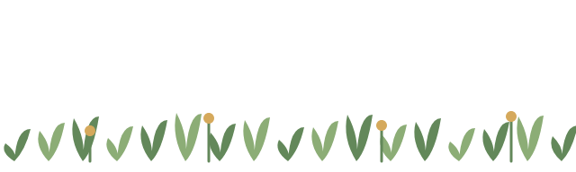

01 / THE MEMORY TREE
Little moments.
A whole life.
The first smile. A muddy walk. A wonderfully messy lunch. Give every memory a place on their very own tree.
First smileA little moment to keepA sunny walkGrowing memories

